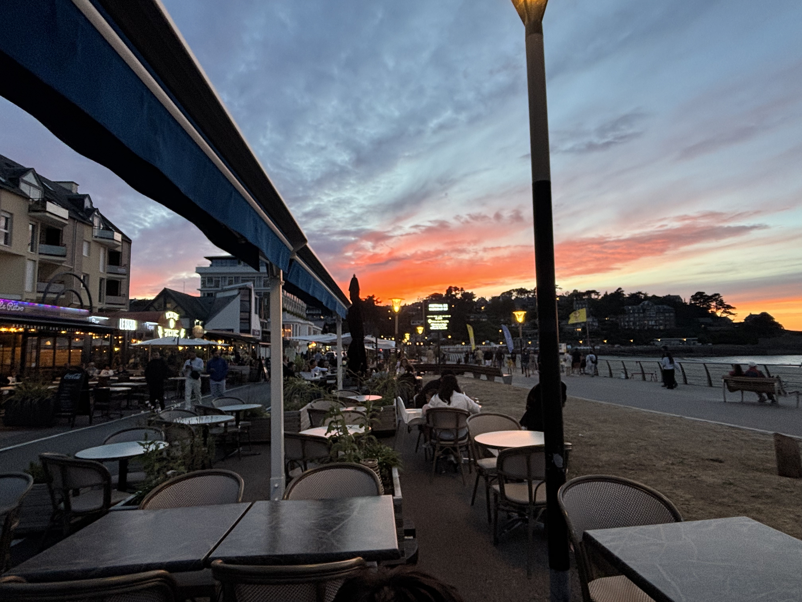

Bistrot de bord de mer · Perros-Guirec
Lo Soli
Les pieds dans le sable, face à la plage de Trestraou.
Bienvenue
Un bistrot chaleureux, les yeux dans la mer
Installé en front de mer sur la plage de Trestraou, Lo Soli mêle la générosité d'une brasserie et la douceur d'un déjeuner face à l'eau.
Produits frais, poissons de la criée, viandes maison et pizzas à pâte fine. Une cuisine simple et sincère.


Nos espaces
Où que vous vous installiez, la mer est là
À la carte
Les incontournables
Quelques plats qui reviennent à chaque table.
Horaires & services
Trois rendez-vous chaque jour
Petit-déjeuner
9h – 11h
Déjeuner
12h – 14h
Dîner
19h · 21h
Réservation conseillée par téléphone, surtout en saison.
Réserver au 02 96 91 14 69
@restaurant_lo_soli_22
Suivez la vie du Soli
Les plats du jour, les couchers de soleil sur Trestraou et l'ambiance en salle.